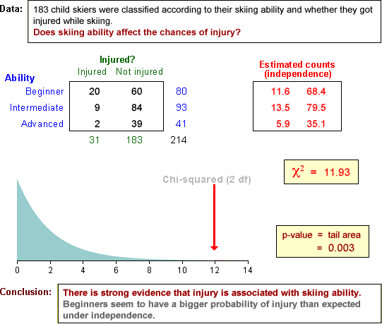

Examples

This page shows several contingency tables. It shows the χ2 statistic and p-value then gives the conclusion from the test.
Emphasise how the conclusion is reached.
The data sets are described in the questions.